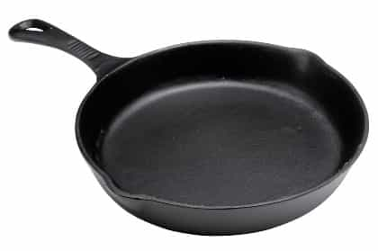
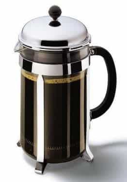
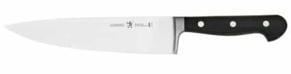
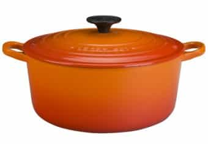
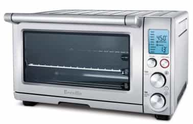

< < < Back
5 Bachelor Kitchen Essentials – Return Of Kings
Whether you live by yourself in baller crib, or with six other dudes in a shithole apartment in the ghetto, a decent working-kitchen—and some basic culinary skills to go with it—is an essential part of the bachelor lifestyle. Not only is being able to prepare quick, nutritious meals for yourself a time- and money-saving tactic, it’s almost always a healthier alternative to daily restaurant eating. Not only that, next to a home bar, nothing is better for getting girls to your place and sealing the bang than being able to whip up interesting snacks and meals at home. It’s one the classic moves that remains effective.
Regardless of your living situation, there are a few core, must-have items that enable you to prepare a wide array of good food for yourself and assemble impressive bites for your lady guests.
Cast-Iron Skillet
You’d be hard-pressed to find a more versatile and effective kitchen implement than the mighty cast-iron skillet. Iron is one of the best conductors of heat, making it perfect for anything from searing pork chops to sautéing vegetables. The best part is that, because it’s solid metal, you can also throw it right in the oven to finish off steaks or as a make-shift baking sheet. A well cared-for cast-iron skillet can (and will) last more than a generation.

Cool Coffee-Making System
The days of the Mr. Coffee maker are over. One of the (few) things we can thank hipsters for is reminding us the value of a good cup of coffee. Grinding your own beans and running them through a pour-over funnel or a through a French press is worth the extra effort. Some people swear by the pour-over system—which requires special cone filters and a slow hot-water pour—but after testing it myself, I prefer the taste of the French press. In either case, I’m surprised at the number of overnight guests who comment on the quality of my morning coffee.

Steel-Bladed Knife and Cutting Board
Nothing makes cooking more frustrating than one of those cheap supermarket knives with the thin corrugated blades. Conversely, a good, sharp knife will make preparing even the most basic of meals into a joy. Every chef—no matter how amateur—should have a legitimate chef’s knife which, with decent care, can last you over a decade. That means a triangle-shaped, 8-inch steel blade and a solid-feeling heft. Ideally, you should have that knife professionally sharpened every six months and keep it properly honed, with a honing steel, before every use. A decent cutting board—wood or bamboo—will ensure that blade stays sharp.

Enameled Dutch Oven
Any large pot to boil water and make soups is key. But, the great part about an enameled Dutch oven is that it gives you the added flexibility, like the cast-iron skillet, to throw it in the oven—enabling you to use it for making large roasts and other slow-cooked meals. A neat trick is to use the high walls of your Dutch oven to fry things that are liable to splash all over your clean kitchen.

Large Toaster Oven
One of the most underrated appliances in the kitchen is a quality toaster oven. Apart from toasting every imaginable form of bread (from bagels to garlic bread), it enables you to prepare and finish an assortment of full-fledged entrees, from pizzas to breaded chicken breasts. One of the most valuable uses for a good model is as a replacement for your microwave’s reheating functions. Unlike the microwave, which leaves your food unevenly heated and soggy, a quality toaster oven (especially one with a “convection” feature) will leave your food crunchy and heated throughout. I can safely say that I use my toaster oven, for one thing or another, at least six days out of the week.

One of the great things about investing in your kitchen is that your items pay for themselves. You’ll never regret dropping coin on these essentials.
Read More: 8 Signs You Should Break Up With A Girl


{kind=link}
{kind=link}
{kind=link}
{kind=link}
{kind=link}